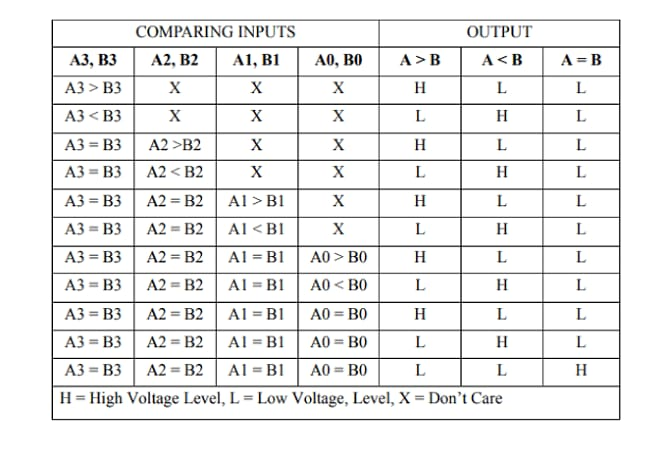
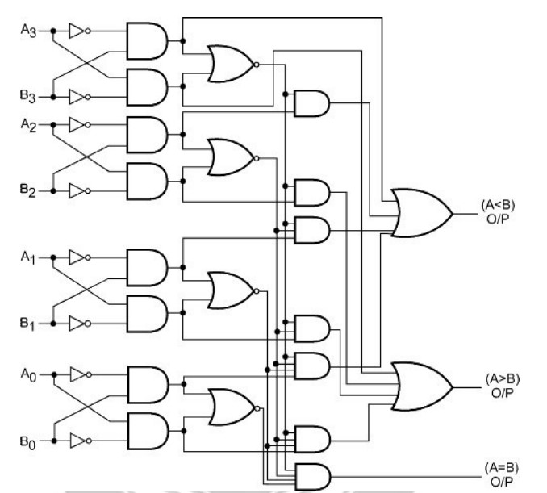

4-Bit Magnitude Comparator
A comparator used to compare two binary numbers each of four bits is called a 4-bit magnitude comparator. It consists of eight inputs each for two four-bit numbers and three outputs to generate lss than, equal to, and greater than between two binary numbers.
In a 4-bit comparator, the condition of A>B can be possible in the following four cases:
If A3 = 1 and B3 = 0
If A3 = B3 and A2 = 1 and B2 = 0
If A3 = B3, A2 = B2 and A1 = 1 and B1 = 0
If A3 = B3, A2 = B2, A1 = B1 and A0 = 1 and B0 = 0
Similarly, the condition for A<B can be possible in the following four cases:
If A3 = 0 and B3 = 1
If A3 = B3 and A2 = 0 and B2 = 1
If A3 = B3, A2 = B2 and A1 = 0 and B1 = 1
If A3 = B3, A2 = B2, A1 = B1 and A0 = 0 and B0 = 1
The condition of A=B is possible only when all the individual bits of one number exactly coincide with the corresponding bits of another number.
The truth table for a 4-bit comparator is given below.
Truth Table:
Logic Diagram:
